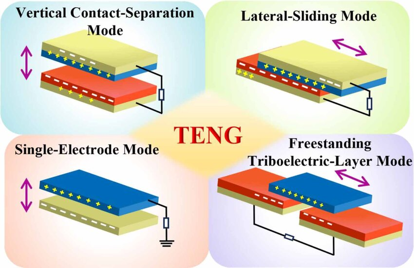

My Projects
solar tracking system project
Designed and implemented a solar tracking system to optimize energy absorption. Applied principles of physics and electronics to improve photovoltaic efficiency. Utilized sensors and programming (e.g., Arduino/Python) to automate panel positioning
View Project
triboelectric nanogenerator
Completed a Summer Internship focused on Energy Harvesting using Triboelectric Nanogenerators (TENG) at the LPMC laboratory. Research Focus: Study of energy conversion and harvesting technologies at the nanoscale. Technical Experience: Practical training in condensed matter physics under the supervision of research experts. Laboratory Skills: Initiation to research methodologies and experimental techniques within the Laboratory of Condensed Matter Physics.
View Project
Development of a Digital Showcase for a Local Café
As part of this project, I designed and developed a showcase website for a specialty café looking to strengthen its online presence. Starting from scratch, I worked on a clean, warm, and modern interface, focusing on the readability of the menu and quick access to practical information (hours, location).
View Project